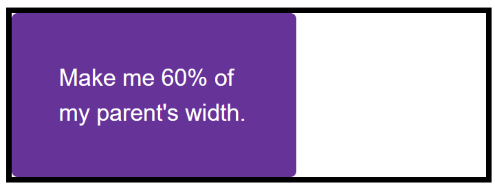

The aim of this task is to help you check your understanding of some of the values and units that we looked at in the lesson on Sizing items in CSS.
Note: You can try out solutions in the interactive editors below, however, it may be helpful to download the code and use an online tool such as CodePen, jsFiddle, or Glitch to work on the tasks.
If you get stuck, then ask us for help — see the {{anch("Assessment or further help")}} section at the bottom of this page.
In this task, you have two boxes. The first should be sized so that the height will be at least 100 pixels tall, even if there is less content than would cause it to grow to that height, however, the content should not overflow if there is more content than fits in 100 pixels. Test this box by removing the content from the HTML to make sure you still get a 100 pixel tall box even with no content.
The second box should be fixed at 100 pixels tall, so that content will overflow if there is too much.
Try updating the live code below to recreate the finished example:
{{EmbedGHLiveSample("css-examples/learn/tasks/sizing/height-min-height.html", '100%', 1000)}}
For assessment or further work purposes, download the starting point for this task to work in your own editor or in an online editor.
This task has a box, which contains another box. Your task is to make the inner box 60% of the width of the outer box. The value of the {{cssxref("box-sizing")}} property is set to {{cssxref("border-box")}}, which means that the total width includes any padding and border. You should also give the inner box padding of 10% using the width (or inline size) as the size from which that percentage is calculated.

Try updating the live code below to recreate the example as displayed in the image:
{{EmbedGHLiveSample("css-examples/learn/tasks/sizing/percentages.html", '100%', 800)}}
For assessment or further work purposes, download the starting point for this task to work in your own editor or in an online editor.
This task has two images in boxes. One image is smaller than the box, the other is larger and breaking out of the box. If you imagine that the box is responsive and therefore could grow and shrink, which property would you apply to the image so that the large image shrinks down into the box but the small image does not stretch.

Try updating the live code below to recreate the example as displayed in the image:
{{EmbedGHLiveSample("css-examples/learn/tasks/sizing/max-width.html", '100%', 1200)}}
For assessment or further work purposes, download the starting point for this task to work in your own editor or in an online editor.
You can practice these examples in the Interactive Editors mentioned above.
If you would like your work assessed, or are stuck and want to ask for help: